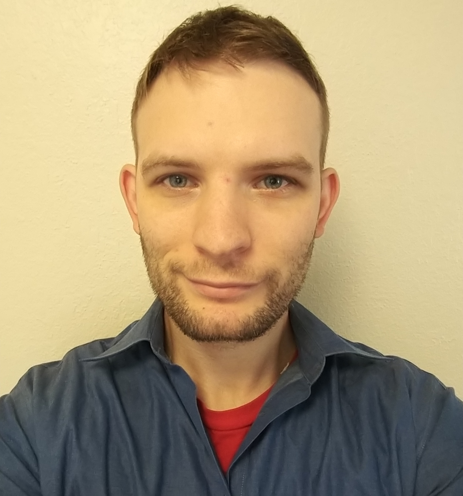

I am currently studying web development at Code Fellows. Some of my greatest strengths are problem solving and attention to detail. As a Navy veteran and a computer science college graduate, I am looking to land a role as a software developer. I am hoping to work with a company where I can contribute value and continue to grow in my career.Code Fellows Student, ninja extraordinaire

My name is Rick and my favorite food is sushi. I'm new to coding but I'm interested in learning as much as I possibly can. I'm especially interested in working on application, network, and data security and user testing. In my off time I like to watch movies, play computer games and exercise.